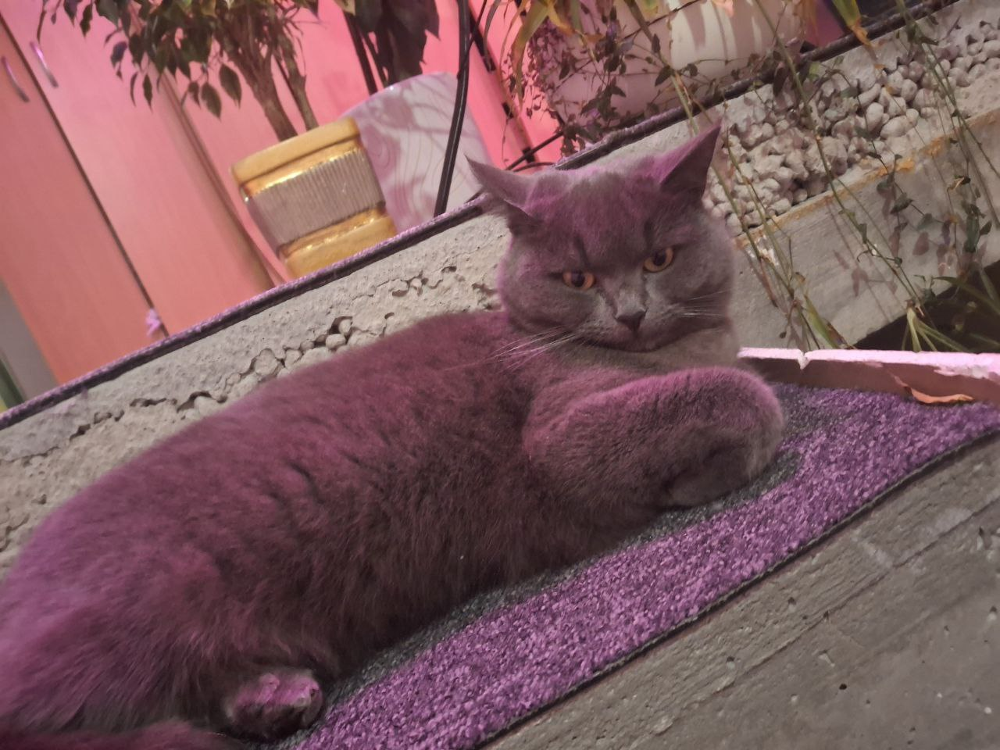

Чому я люблю котів?
Коти — це неймовірно милі, розумні та незалежні створіння. Вони приносять радість у наше життя та роблять його кращим.
Особливості котів
- Граційність і краса
- Неймовірна здатність ловити мишей
- Любов до затишних місць
- Заспокійливе муркотіння
Мій улюблений кіт
У мене є кіт на ім'я Мія. Вона сіренька, з пухнастим хвостом і зеленими очима. Її улюблене заняття — спати на сонячному місці.
